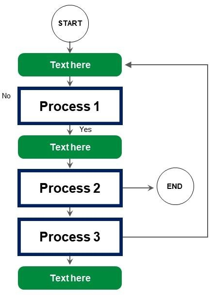
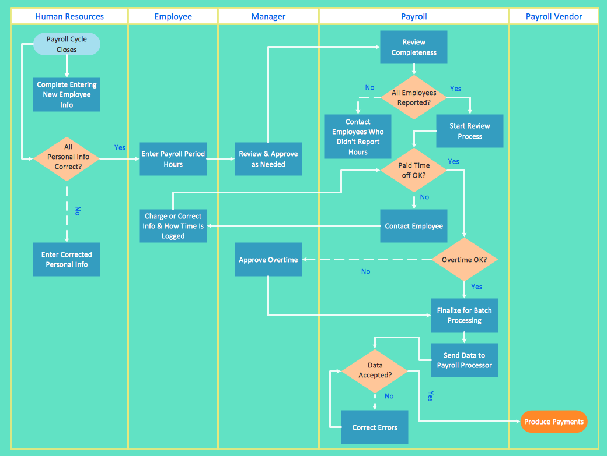
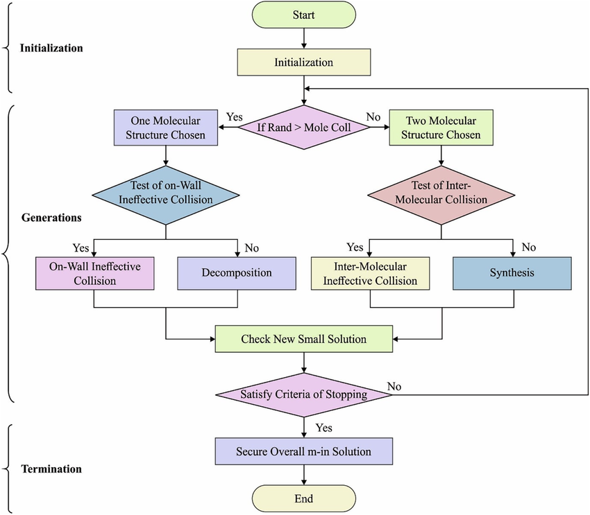

Flujogramas: el prototipo de papel de su proyecto
Cómo representar gráficamente el proceso experimental o metodológico para detectar inconsistencias antes de invertir tiempo en laboratorio.
Esta guía acompaña la entrega del flujograma del proyecto — el prototipo de papel que describe gráficamente el proceso experimental o metodológico que su equipo va a ejecutar. Además de ser un entregable, es la herramienta que les va a permitir detectar inconsistencias y callejones sin salida antes de invertir tiempo en laboratorio.
En esta guía
Esta es una guía de proceso, no una lectura de clase. No hay quiz sobre este material: su objetivo es ayudarles a producir un entregable sólido.
1. ¿Qué es un flujograma?
Un flujograma o diagrama de flujo es una herramienta gráfica que representa visualmente un proceso o algoritmo. Se usa ampliamente en informática, economía, ingeniería e incluso psicología, para organizar de manera simple las decisiones involucradas en un proceso.
Los diagramas de flujo se construyen, por convención, mediante un conjunto de símbolos determinados, acompañados de texto y unidos por flechas. Al observar el diagrama se puede comprender el sentido específico en el cual «fluye» — qué cosas ocurren primero y qué cosas ocurren después, entendiendo que las últimas dependen siempre de las primeras.
El nombre flujograma es un neologismo creado a partir del término anglosajón flow chart o flow diagram, y es sinónimo de «diagrama de flujo».
2. Características
Un diagrama de flujo se caracteriza por:
3. Tipos de flujograma
Flujograma lineal
Aquellos cuyo proceso puede seguirse de manera simple y secuencial — los pasos o instancias se encuentran uno después del otro. Es el tipo más sencillo y rápido, pero abarca una cantidad de información moderada. Puede ser de tres tipos:
Vertical
De arriba hacia abajo.
Horizontal
De izquierda a derecha.
Panorámico
Combinación de los anteriores.

Flujograma matricial
Aquellos en los que se establecen visualmente puntos de conexión lógica entre los elementos de un proceso (características, funciones, actividades) empleando matrices en lugar de secuencias lineales. Son ideales cuando hay múltiples actores o roles involucrados, porque cada columna de la matriz corresponde a uno de ellos.

Para proyectos de investigación en el departamento, el flujograma vertical es el más común porque la secuencia experimental tiende a ser lineal. Si el proceso involucra varios laboratorios o roles, considere el matricial.
4. Símbolos estándar
El flujograma usa un conjunto estandarizado de símbolos. Pase el cursor sobre cada uno (o haga clic) para ver su descripción detallada.
5. Cómo hacer un flujograma
Para construir un flujograma de manera simple y correcta, siga estos cuatro pasos. Use las pestañas para navegar entre ellos.
Dibujar el diagrama «en lineal» sin pensar en el layout de la hoja. En procesos complejos, planee primero las ramas en papel — a mano alzada — antes de empezar a dibujar en la herramienta digital. Si el diagrama termina siendo difícil de seguir a simple vista, algo quedó mal en esta etapa.
6. Ejemplo académico
Así se ve un flujograma real publicado en un artículo científico. Nótese la claridad en la agrupación por etapas (Initialization, Generations, Termination), el uso sistemático de decisiones con salidas Yes/No, y el código de colores que diferencia tipos de operación.

- Llaves de agrupación a la izquierda que marcan fases macro del proceso.
- Etiquetas Yes/No sobre cada flecha que sale de un rombo, sin ambigüedad.
- Un solo punto de entrada y uno de salida (Start / End en rojo).
- Código de color consistente por tipo de bloque.
7. Herramientas recomendadas
Para construir su flujograma puede usar cualquiera de estas herramientas. Todas permiten exportar a PDF para la entrega.
draw.io (diagrams.net) ↗
Gratuita, potente, con biblioteca completa de símbolos de flujograma. Guarda en Drive, GitHub o local. La más recomendada.
Lucidchart ↗
Colaborativa, interfaz pulida. Versión gratuita limitada; plan estudiantil con cuenta institucional.
Miro ↗
Pizarra infinita, excelente para flujogramas colaborativos en tiempo real. Ideal si el equipo trabaja en línea.
Canva ↗
Buena opción si priorizan estética sobre precisión técnica. Biblioteca de plantillas extensa.
Para la primera versión use papel y lápiz — literalmente. Es la forma más rápida de iterar el layout antes de pasar a una herramienta digital.
8. Entrega
Para completar esta actividad, los estudiantes deben desarrollar el prototipo de papel de su proyecto, representado en un flujograma. La entrega debe mostrar de manera clara y evidente que se hizo un esfuerzo importante para desarrollar el diseño experimental en detalle.
- Construyan el flujograma en la herramienta de su elección, siguiendo los cuatro pasos de esta guía.
- Verifiquen que no hay callejones sin salida ni decisiones incompletas.
- Exporten el flujograma a PDF.
- Envíen el PDF al asesor principal para revisión.
- Una vez aprobado, el asesor firma digitalmente el PDF.
- Cada integrante sube el PDF firmado a BloqueNeón antes de la fecha límite establecida.
Un buen flujograma es el que alguien que no trabajó en el proyecto puede entender sin necesidad de explicación adicional. Antes de entregar, pruébenlo con un compañero de otro equipo — si lo entiende, están listos.